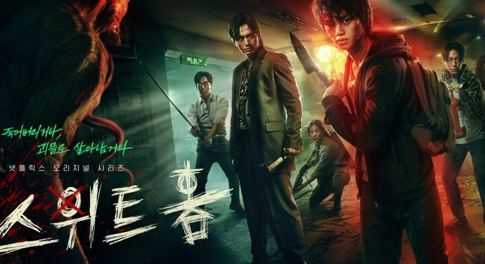

Artikel Film Rekomendari
Mieruko-Chan

Mieruko-chan (2021) bercerita tentang seorang gadis SMA yang awalnya hidup normal.
Tapi semua itu berubah saat ia tiba-tiba bisa melihat sosok hantu. Awalnya ia menganggap
kalau itu hanya suatu kebetulan karena ia merasa kelelahan.
Mr.Queen

Mr. Queen mengisahkan tentang seorang pria dari zaman modern yang jiwanya terperangkap
dalam tubuh seorang ratu dari dinasti Joseon.Shin Hye Sun berperan sebagai Kim So Yong,
ratu Joseon dengan jiwa koki Blue House Jang Bong Hwan yang terperangkap di dalam dirinya.
Sweet Home
Sweet Home yang mengusung genre horor, misteri, dan thriller ini akan
menyorot pemuda bernama Cha Hyun Soo ( Song Kang ). Hidup sebatang kara
karena seluruhkeluarganya tewas akibat kecelakaan,Hyun Soo harus pindah
ke sebuah apartemen kumuh bernama Green Home.